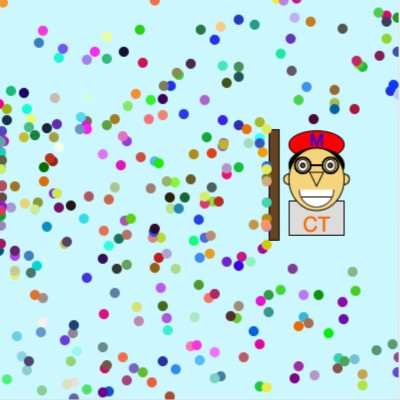
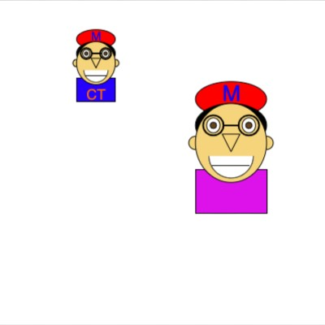
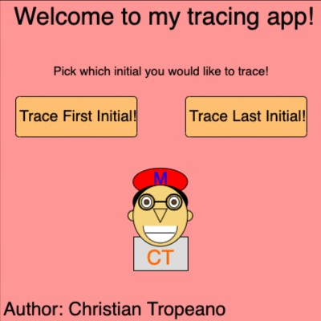
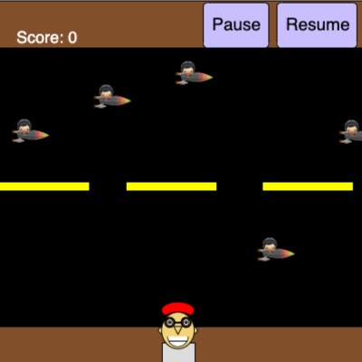

Here are my various Javascript projects that I have made while in CSC: 106. To look at the code and see how they work, press the picture for the corresponding
program.
Me as a Bitmoji
In this project, I have made a bitmoji of myself based on a picture I took of myself.
Dancing Bitmoji
Here is my bitmoji dancing around the screen. To see the bitmoji move, click on the picture and press refresh to see my bitmoji hop around
the screen.
Racing Bitmoji
Now my bitmoji must race a frog and a bunny for bragging rights. To see the race again, press on the picture and click refresh and see who wins the
race everytime.
Dancing Bitmoji (coded with Functions)
This is the same dancing bitmoji, however I have used the knowledge of functions to code it which makes the code look neater and visually appealing.
Racing Bitmoji (coded with Functions)
This is the same racing bitmoji, however made each racer as a function so I could race as many people as I want. In order to add a racer, I would
just have to call the function instead of writing all of the code again.
Resizing Me
This program resizes my bitmoji and a smaller version of the bitmoji can be drawn across the screen my repeatedly pressing the mouse,
almost as a paintbrush.
Decision Tree: Should You Draft a Quarterback
If your football team needs help drafting a QB, this program helps you figure out if you should draft a quarterback in the draft or wait until free agnecy
or trade for one. This program ustilized the idea of conditionals, specifically if-statements, and makes an answer based on which answer you click.
Follow Program
This is the beginning of developing simple games using Javascript. In this particular game, your mouse is being constantly followed by my bitmoji.
If your mouse happens to go to the left or the top of the campus, the bitmoji will stop follwoing you and you lose the game. To play again, press
"Refresh" at the bottom left of the screen to have your bitmoji follow the mouse again.
Multiplication Table
Using my knowledge on nested for-loops in Javascript, I created a multiplication that can calculate products up to 12 (12 x 12 being the max).
Bitmoji Line
This program draws my bitmoji a specified number of times in rows of four. If a row has 4 bitmojis in it, the program will draw a new row. The
maximum amount of bitmojis that will fit on the canvas is 3 rows of 4, or 12 bitmojis total.
Dry Bitmoji
In this project, my bitmoji is hiding behind an umbrella to shield himself from the rain. I stored all of the values pertaining to the project (the
x and y positions, speed of the raindrops, color of the raindrops) in their own array and used the push function to insert new values into the arrays,
which created the effect of it raining on the screen.

Bitmoji Object
In this project, I coded my bitmoji using my knowledge of object oriented programming. This allows the user to create different versions of my bitmoji
and decide the height, x position, y position, the shirt color of my bitmoji and decide if the shirt has my initials or not by creating a new object.

Educational App
Here is my educational app where a child can learn to trace the intials of my name using various colors. I used the idea of object oriented programming
to create the class that created the buttons within the app.

Frogger Assignment
This is an adaptation of the popular sidescroller game Frogger. Instead of a frog avoiding cars, this version has my bitmoji dodging rocketships. This
is the first game we have created in CSC 106.

Memory Game
This program is a memory game based off of the Khan memory game with minor differences. This is another game that we have coded in CSC 106 using the
language Javascript along with the JS Processisng library.